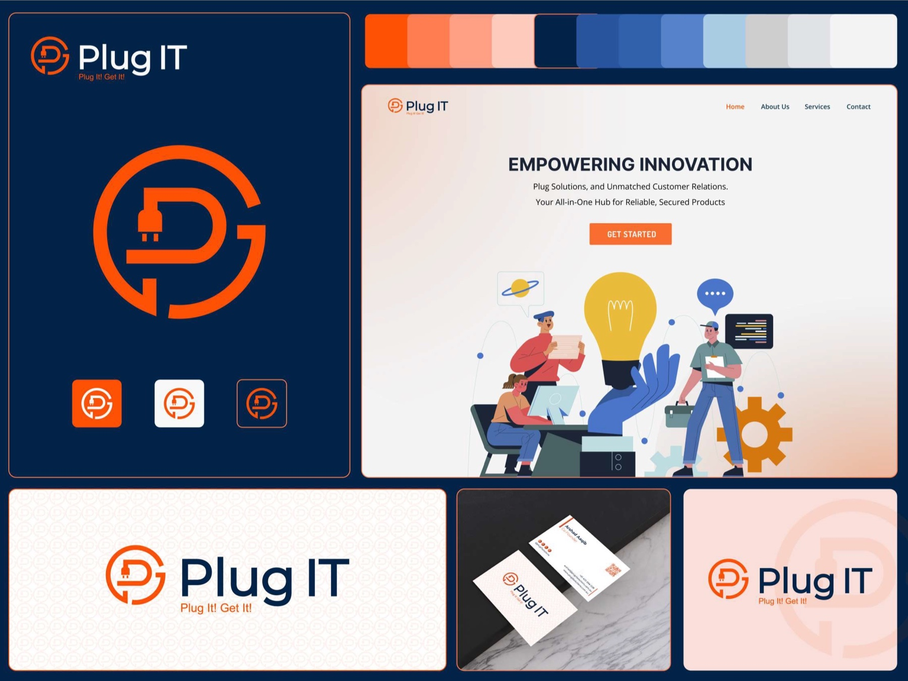

Brand identity
Plug IT
A bold technology identity built around simplified connectivity.

01 / PURPOSE & CONCEPT
Connecting ideas and technology.
A modern brand identity for Plug IT, a technology solutions provider focused on innovation and reliability. A minimal plug icon forms the letter “P”, reinforced by the tagline “Plug It! Get It!” for instant recall and clarity.
02 / DESIGN APPROACH
The visual language.
Deep navy and energetic orange balance trust with action. The geometrically constructed logo adapts to multiple backgrounds, while a subtle grid-based pattern connects the website UI, business cards, and custom iconography.
03 / RESULT
A consistent brand presence.
A sharp, scalable identity for smart, secure technology solutions. The visual system balances professionalism with approachability across digital and physical touchpoints, from pitch decks to online platforms.
04 / WHY THIS DIRECTION
Connect the name to the promise.
The plug-shaped “P” makes connectivity part of the name itself. Its circular construction suggests a connected system, while the short tagline keeps the message direct. Navy gives the identity a stable base; orange brings emphasis to an otherwise restrained technology palette. The aim is an identity that feels capable and approachable.
05 / CRITICAL REASONING
Distinctive without adding noise.
Blue and orange are familiar in technology branding, so colour alone cannot carry recognition. The plug monogram, consistent proportions, and repeatable pattern provide the more distinctive elements. The pattern should stay quiet behind content, and the logo needs a simplified presentation at small sizes so the plug detail does not disappear.
06 / ACROSS APPLICATIONS
Adapt the hierarchy, keep the identity.
The website, business cards, and presentation materials share the same visual anchors. The full wordmark introduces the brand; the symbol can support compact placements. Illustration adds warmth to the website, while quieter layouts keep small printed applications clear.